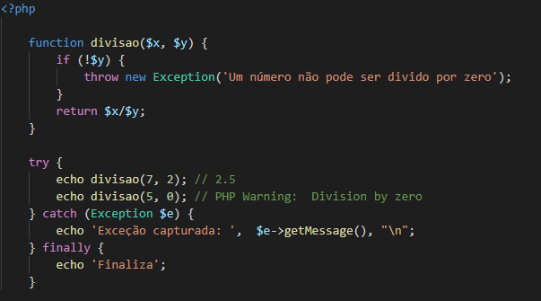

É praticamente impossível prever e controlar todos os erros que uma aplicação está exposta a sofrer em produção, até porque alguns desses erros fogem de nosso domínio, como o usuário ficar sem internet ao realizar alguma ação. Para esses casos temos a instrução try/catch, que trata os erros em forma de exceção e evita apresentar erros deselegantes aos usuários.
A instrução finally é opcional e geralmente é utilizada para desfazer alguma ação realizada antes do erro (exclusão de um arquivo criado anteriormente, por exemplo).